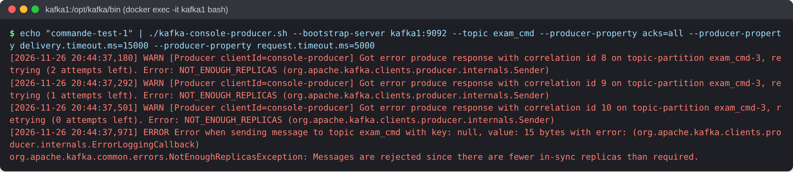
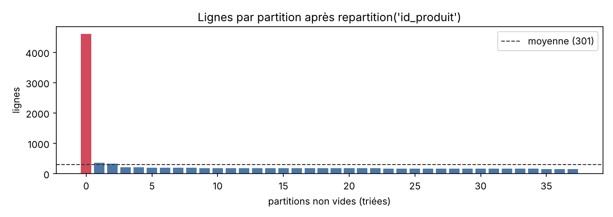
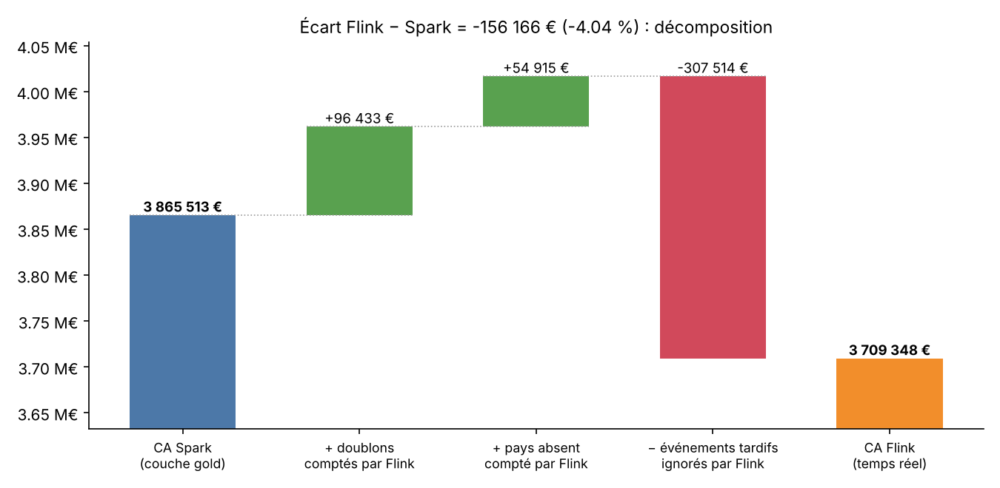
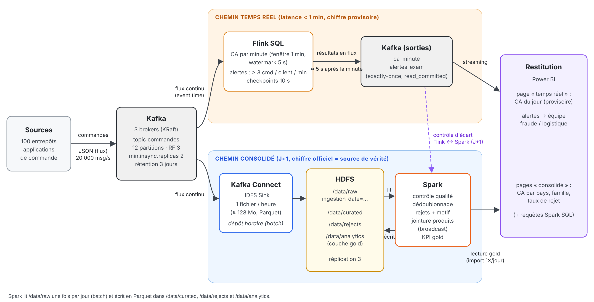
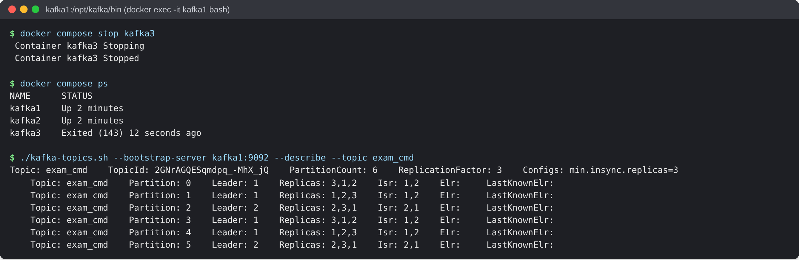
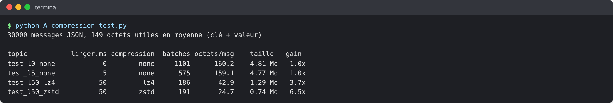

Pourquoi le chiffre d'affaires temps réel ne correspond pas au chiffre consolidé,
et comment le chiffrer à l'euro près.
GlobalTech Industries : 100 entrepôts, chaque commande publiée dans Kafka. Flink calcule le CA par minute en continu, Spark produit le chiffre consolidé. Les deux chiffres ne correspondent pas.
Comment j'ai travaillé : le kit du cours sous Docker (3 brokers Kafka KRaft, Flink 1.20), HDFS dans un conteneur Hadoop, et Spark dans un notebook PySpark compatible Colab. Les données d'examen n'étaient pas disponibles : un jeu de test au même format (12 484 lignes de commandes, avec les mêmes anomalies) a été généré par un script à graine fixe.
Au moins 10, sinon certains des 10 consommateurs du groupe n'ont rien à lire. 12 laisse 20 % de marge et se répartit bien sur 3 ou 4 brokers.
15,6 To ÷ 5,6 To utiles par broker = 3 brokers, plus 1 pour tenir une panne ou une maintenance (N+1).
acks=all, enable.idempotence=true, retries illimitésreplication.factor=3, min.insync.replicas=2unclean.leader.election.enable=false
1. Topic exam_cmd : 6 partitions, RF 3, min.insync.replicas=3.
2. J'arrête kafka3 : l'ISR passe à 2 répliques.
3. acks=all exige un ISR d'au moins 3 : NOT_ENOUGH_REPLICAS.
4. min.insync.replicas=2 : l'écriture passe, et chaque message est encore sur 2 brokers.
5. kafka3 redémarre et l'ISR revient à 3 en 4 s.
À retenir : min.insync.replicas = RF − 1, pour tolérer une panne sans perte et sans bloquer les écritures.
| Minute 20:52 | Commandes comptées | Perdues | Délai d'émission |
|---|---|---|---|
| Réel (topic relu) | 2 897 | – | – |
| Watermark 5 s | 2 834 | −2,2 % | 5,6 s |
| Watermark 30 s | 2 891 | −0,2 % | 30,4 s |
| Watermark 60 s | 2 897 | 0 % | 60,7 s |
Trois jobs identiques sur le même topic, seul le watermark change. Les topics de sortie sont en LogAppendTime, ce qui donne l'heure exacte d'émission. Générateur : 10 % d'événements en retard, jusqu'à 40 s.
Fraude : 5 s. Une alerte doit être immédiate ; rater 2 % des événements tardifs est acceptable.
Rapport de fin de journée : ≥ retard maximal (60 s), ou mieux, le batch Spark, qui voit tout.
Job d'alertes « plus de 3 commandes par client et par minute » vers alertes_exam. J'arrête le TaskManager : le job passe en RESTARTING (plus aucun slot), puis repart depuis le dernier checkpoint.
| Essai | Moment de la panne | Doublons |
|---|---|---|
| 1 (at-least-once) | après un checkpoint déjà fait | 0 |
| 2 (at-least-once) | entre l'émission et le checkpoint | 338 |
| 3 (exactly-once) | entre le calcul et le checkpoint | 0 |
Vérification : clé (customer_id, w_start) comptée sur tout le topic.
quand la panne tombe entre l'émission et le checkpoint : toute la minute 21:01 a été réécrite
Exactly-once : sink.delivery-guarantee='exactly-once' + transactions Kafka validées au checkpoint + lecteurs en read_committed.
Coût : résultats visibles au checkpoint (9,1 s au lieu de 5,5 s), plus de charge Kafka, et tous les lecteurs doivent lire en read_committed.
fichiers = 100 entrepôts × 1 440 min × 182 jours
de mémoire NameNode (2 objets × 150 o par fichier)
1 fichier par entrepôt et par heure : 436 800 fichiers, 60 fois moins, environ 131 Mo. Pour Kafka → HDFS : accumuler avant d'écrire, fermer les fichiers à 128 Mo–1 Go ou toutes les heures, partitionner par date et heure, compacter chaque nuit.
| Manipulation | Fichiers | Blocs | Objets |
|---|---|---|---|
| CSV d'origine (fsck) | 1 | 1 | 2 |
| split -l 600 | 21 | 21 | 42 |
| après compaction | 1 | 1 | 2 |
Même contenu (même md5), mais 21 fois plus d'objets. fsck : 1 bloc, réplication effective 1 (un seul DataNode, comme sur Colab).
Arborescence : /data/raw/commandes/ingestion_date=2026-11-02, /data/curated, /data/analytics, /data/rejects.
Contrôle (un seul agg) | Lignes | % |
|---|---|---|
| lignes | 12 484 | 100 |
| doublons sur id_commande | 377 | 3,02 |
| pays NULL | 190 | 1,52 |
| prix NULL | 149 | 1,19 |
| quantité ≤ 0 | 249 | 1,99 |
| dates invalides (+ 12 vides) | 88 | 0,70 |
Lecture en texte avec un schéma imposé, pour contrôler les conversions. Dédoublonnage : première arrivée par id_commande. Un motif de rejet par ligne, dans l'ordre pays → quantité → prix → date.
propres + rejets = commandes distinctes, vérifié en relisant les deux dossiers Parquet écrits

SortMergeJoin, 4 Exchange. Après repartition('id_produit') : 38 partitions non vides sur 200, et la plus grosse (P007) pèse 25,8 fois la médiane.
| Mesuré sur 1,14 M lignes | Avant (SMJ) | Broadcast |
|---|---|---|
| Exchange (shuffle) | 3 | 1 |
| lignes envoyées en shuffle | 1 144 980 | 20 |
| tâche la plus chargée | 461 101 | 286 226 |
| déséquilibre max / médiane | 25,8 | 1,0 |
| durée | 1,45 s | 0,73 s |
Pourquoi le broadcast : la table produits fait 40 lignes. On l'envoie à chaque tâche et les commandes ne sont plus redistribuées : le skew disparaît. Le salting ne vaut que si les deux tables sont grosses, et l'AQE ne découpe pas des partitions aussi petites.
| Pays | CA (€) | Part |
|---|---|---|
| FR | 1 491 084 | 38,6 % |
| DE | 581 280 | 15,0 % |
| BE | 459 769 | 11,9 % |
| ES · IT · CH · MA · TN | 1 333 380 | 34,5 % |
| Famille | CA (€) | Part |
|---|---|---|
| Informatique | 1 880 674 | 48,7 % |
| Réseau | 748 151 | 19,4 % |
| Mobilier | 640 867 | 16,6 % |
| Outillage · Consommables | 595 821 | 15,4 % |
Quatre tables Parquet (ca_par_pays, ca_par_famille, indicateurs, rejets_par_motif), 1 fichier chacune, déposées dans /data/analytics.

Méthode : je rejoue les règles Flink ligne par ligne sur les données brutes. Elles redonnent exactement le fichier Flink (120 minutes, 0 € d'écart), puis je compare avec les règles Spark.
| doublons (Flink ne dédoublonne pas) | +96 433 € |
| pays absent (Flink ne contrôle pas) | +54 915 € |
| événements tardifs (> 5 s) | −307 514 € |
| Écart total | −156 166 € |
|---|
L'écart net de −4 % cache près de 12 % d'écarts bruts qui se compensent en partie.
| Formule | Σ quantité × prix unitaire (€) |
| Inclus | commandes distinctes et valides, datées par l'événement, retards compris |
| Exclus | doublons, rejets (tracés avec leur motif) |
| Source de vérité | Spark (gold) ; Flink = temps réel provisoire |
| Fraîcheur | Flink < 70 s ; Spark J+1 avant 8 h |
E3 (option lake) : 3 requêtes Spark SQL sur la gold + dictionnaire de données (dans le compte rendu).

| Risque | Parade |
|---|---|
| Panne de broker : écritures bloquées ou perte | RF 3, min.insync 2, acks=all, idempotence, alerte sur les partitions sous-répliquées (A2) |
| Doublons, chiffres qui divergent | Flink exactly-once + read_committed, dédoublonnage dans les deux chemins, réconciliation quotidienne (B4, E2) |
| Petits fichiers HDFS : NameNode saturé | dépôt par taille et par heure, partitions par date, compaction nocturne (C) |
Amélioration : un seul job Flink « qualité » (dédoublonnage + règles de rejet) écrit un topic commandes_propres en exactly-once, lu à la fois par le temps réel et par le dépôt HDFS. Les écarts dus aux doublons et au pays disparaissent par construction. Les agrégats vont ensuite dans une table qui accepte les mises à jour (Iceberg, Delta ou Paimon) pour corriger les minutes avec les données tardives.
1. Une panne doit bloquer une écriture, jamais la perdre (min.insync.replicas).
2. Le watermark se règle selon l'usage : alerte ou rapport.
3. Les doublons viennent des reprises : exactly-once ou lecture idempotente.
4. Un écart de KPI se décompose, se chiffre et se corrige à la source.
Questions ?
kafka-topics --describe
| Colonne | Signification | Après l'arrêt de kafka3 |
|---|---|---|
| Leader | broker qui reçoit les écritures et les lectures | partitions 0 et 3 : 3 → 1 (élu dans l'ISR) |
| Replicas | brokers prévus pour une copie ; le 1er est le leader préféré | inchangé : c'est l'affectation, pas l'état |
| Isr | répliques à jour avec le leader (retard < 30 s) ; seules candidates pour devenir leader | 3 → 2 : donc refus si min.insync = 3 |
_metadata est écrit et le puits valide la transaction.| Contenu | Fichier |
|---|---|
| offsets Kafka + watermark des sources | _metadata (726 o) |
| accumulateurs des fenêtres ouvertes, client par client, + timers | 1 fichier par sous-tâche (262 et 303 clients) |
| état du writer + transactions à valider | _metadata |
| pas les commandes : Kafka les rejoue | – |
88 Ko, 21 à 137 ms, aligné. L'état monte de 40 à 98 Ko pendant la minute, puis retombe quand la fenêtre est émise et purgée.
| Heure | Ce qui se passe |
|---|---|
| 00:22:05,6 | fenêtre émise : alertes écrites, le HW monte, mais transaction ouverte donc invisibles |
| 00:22:07,4 | checkpoint n°5 terminé |
| 00:22:07,6 | transaction validée : le LSO rattrape le HW (+2 marqueurs de commit), alertes lisibles |
HW = tout ce qui est écrit dans le topic ; LSO = ce qu'un lecteur read_committed peut lire.
| Minute 21:07 (panne avant le commit) | Alertes |
|---|---|
lecture read_uncommitted | 654 |
lecture read_committed | 327 |
La transaction interrompue est dans le log mais annulée : un lecteur read_committed ne la voit jamais. La fenêtre a été recalculée et validée une seule fois.

Même 30 000 commandes, taille réelle du segment sur le broker. Le producteur compresse des batchs : plus ils sont gros (linger.ms), mieux ça compresse. Gain sur le disque, le réseau et la réplication.
15,55 To → 2,4 To avec zstd. La rétention supprime des segments entiers (1 Go), vérifiés toutes les 5 min ; le segment actif n'est jamais supprimé. Sans réglage, le topic garde 7 jours (défaut vérifié), pas 3.